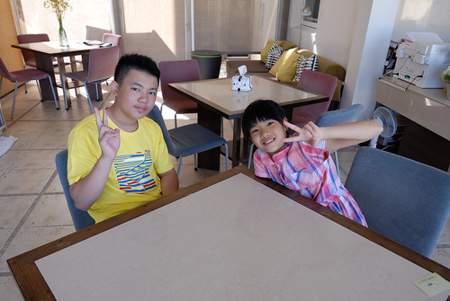

決定到澎湖玩後 才確切體認到澎湖觀光之發達 民宿業者不下五六百家 各式類型 各種價錢都有 網上看得眼花撩亂 完全不知怎麼下手 乾脆省事地完全參考”沿著菊島旅行”的景點與民宿資訊 喜歡北環白沙鄉與西嶼鄉的鄉間好風情 於是選擇白沙鄉鎮海的鎮海灣民宿作為前二晚落腳處 一來往返西嶼方便些 再者民宿獨特提供的SUP教學體驗活動, 阿母想徹哥應該會喜歡吧! 民宿的設備 服務與SUP體驗果然有口碑 也深得徹愛喜歡~ 
隱於鎮海村裡的鎮海灣民宿 獨棟黃色建物 漂亮卻又不過分氣派奢華 因為不想到熱門的吉貝 北海玩水上活動 民宿提供的房客專屬SUP體驗 適合怕熱鬧的我們 (只是價錢也不是便宜就是…)  從沒玩過板類運動 也不了解SUP的我們 很難想像也有些擔心 自己是否可以像照片這樣划板航向大海…
從沒玩過板類運動 也不了解SUP的我們 很難想像也有些擔心 自己是否可以像照片這樣划板航向大海…  SUP在滿潮時分玩較佳 而七月的滿潮時間為清晨或傍晚時 我們預訂在睡二晚過後的清早時分體驗 約定的六點鐘前 全家完全不賴床的完成著裝 蓄勢待發…
SUP在滿潮時分玩較佳 而七月的滿潮時間為清晨或傍晚時 我們預訂在睡二晚過後的清早時分體驗 約定的六點鐘前 全家完全不賴床的完成著裝 蓄勢待發…  民宿主人也是教練 用機車拖載著三塊板子 而我們緩慢散步約三五分鐘時間來到鎮海灣 看到鎮海灣的第一眼 我有種相見恨晚的遺憾 早知道昨天傍晚來這就好…
民宿主人也是教練 用機車拖載著三塊板子 而我們緩慢散步約三五分鐘時間來到鎮海灣 看到鎮海灣的第一眼 我有種相見恨晚的遺憾 早知道昨天傍晚來這就好…  民宿官網上介紹SUP: SUP是Stand Up Paddle的縮寫，翻譯過來就是站著划槳的意思 它是所有水上板類運動中，最容易學習、娛樂性最高、適合年齡層最廣的一項活動 教練講解完上板 划槳 以及落水自救上板方法後 爸爸 徹哥與我輪流先是學著跪划 愛愛也牛刀小試的在近處小試
民宿官網上介紹SUP: SUP是Stand Up Paddle的縮寫，翻譯過來就是站著划槳的意思 它是所有水上板類運動中，最容易學習、娛樂性最高、適合年齡層最廣的一項活動 教練講解完上板 划槳 以及落水自救上板方法後 爸爸 徹哥與我輪流先是學著跪划 愛愛也牛刀小試的在近處小試  承認 我是最沒天分的那一個 完全不得方向控制要領 還有勞教練出動救援越漂越遠的我 跪划之後 接著便要嘗試站著划 除了較好使力外 教練說站著划向大海的視野與感動肯定一輩子難忘
承認 我是最沒天分的那一個 完全不得方向控制要領 還有勞教練出動救援越漂越遠的我 跪划之後 接著便要嘗試站著划 除了較好使力外 教練說站著划向大海的視野與感動肯定一輩子難忘  徹哥不愧是青春少年 沒在驚的很快上手
徹哥不愧是青春少年 沒在驚的很快上手  相較之下 阿母是大肉腳 翻了二次板 雖然有穿救身衣 板子也有繩子練在腳環 但翻船後的惶恐讓我費盡九牛二虎之力才能再上板 而第二次翻板之後 我再也不敢挑戰自己的平衡感了
相較之下 阿母是大肉腳 翻了二次板 雖然有穿救身衣 板子也有繩子練在腳環 但翻船後的惶恐讓我費盡九牛二虎之力才能再上板 而第二次翻板之後 我再也不敢挑戰自己的平衡感了  愛愛遠遠看著徹哥的輕鬆自在 與阿母的笨拙狼狽 想必五味雜陳…
愛愛遠遠看著徹哥的輕鬆自在 與阿母的笨拙狼狽 想必五味雜陳…  徹爸與徹哥都很上手後 教練領著我們 一共三塊板航向起碼五百公尺遠以外目標地燈塔 教練說經過練習 誰是乘客應該顯而易見了 沒錯! 阿母在海上必須完全的靠兒子
徹爸與徹哥都很上手後 教練領著我們 一共三塊板航向起碼五百公尺遠以外目標地燈塔 教練說經過練習 誰是乘客應該顯而易見了 沒錯! 阿母在海上必須完全的靠兒子  愛愛則乘爸爸的板 命交給爸爸顧比較安心 航向大海 此生沒有過的經驗 的確很酷啊
愛愛則乘爸爸的板 命交給爸爸顧比較安心 航向大海 此生沒有過的經驗 的確很酷啊  但肉腳阿母被一個沒在驚的青春少年載 也真的還是很怕阿 到達目的地燈塔處後 教練拿出有備而來的釣竿 讓我們試著甩竿釣魚 體驗他說的在一塊板子上可以做很多事的悠閒 徹哥也小小爬上燈塔階梯 嘗試一躍而下的快意(結果只有倉皇緊張)
但肉腳阿母被一個沒在驚的青春少年載 也真的還是很怕阿 到達目的地燈塔處後 教練拿出有備而來的釣竿 讓我們試著甩竿釣魚 體驗他說的在一塊板子上可以做很多事的悠閒 徹哥也小小爬上燈塔階梯 嘗試一躍而下的快意(結果只有倉皇緊張)  回程比去程費力費力許多 浪不好使 就在徹哥要從跪划改採較好使力的站划時 翻板了 是的! 阿母一個清早就落海三次 而第三次落海果然就熟 不會緊張了 再上板後 教練體恤徹哥在惡劣風浪下還要載個阿母實在不易 於是讓我轉搭教練的板 讓徹哥自己划回岸邊 看著徹哥好像越划越遠 但霎那間卻又趕上遙遙在前的徹爸 真的不得不說在海上的徹哥比我們優秀許多 而轉搭教練板的我 其實就像坐賽車手開的快車 雖然知道不用怕但就像搭雲霄飛車 心臟也是要夠大顆阿! 好不容易全家平安返回岸邊後 讓愛愛小試站划
回程比去程費力費力許多 浪不好使 就在徹哥要從跪划改採較好使力的站划時 翻板了 是的! 阿母一個清早就落海三次 而第三次落海果然就熟 不會緊張了 再上板後 教練體恤徹哥在惡劣風浪下還要載個阿母實在不易 於是讓我轉搭教練的板 讓徹哥自己划回岸邊 看著徹哥好像越划越遠 但霎那間卻又趕上遙遙在前的徹爸 真的不得不說在海上的徹哥比我們優秀許多 而轉搭教練板的我 其實就像坐賽車手開的快車 雖然知道不用怕但就像搭雲霄飛車 心臟也是要夠大顆阿! 好不容易全家平安返回岸邊後 讓愛愛小試站划  我們今早的體驗活動也到此結束
我們今早的體驗活動也到此結束  雖然是清早 但約莫二個半小時的活動還是讓人曬出二截腿了
雖然是清早 但約莫二個半小時的活動還是讓人曬出二截腿了 
盥洗過後 清爽的在民宿大廳等待享用早餐  不同於前一天早餐的海鮮粥 今天的早餐是海菜鮮蚵拌麵線 都是很有澎湖特色的鮮味早餐!  一早只有SUP體驗活動的安排 於是早餐過後我們愜意地在民宿內度時間
一早只有SUP體驗活動的安排 於是早餐過後我們愜意地在民宿內度時間 

 如果有機會再到澎湖 再到白沙鄉 值得停留更多時間在鎮海村 鎮海灣 鎮海灣民宿的~
如果有機會再到澎湖 再到白沙鄉 值得停留更多時間在鎮海村 鎮海灣 鎮海灣民宿的~  十一點退房時間前 我們包裹好全身再啟程繼續我們的澎湖行 今日最重要行程的就是要搭下午二點半往望安的船 捨棄早上公船沒搭(只有一班次) 我們一定一定得搭上下午這班船 所以搭船前我們沒有目標 隨興的來到澎湖生活博物館 (躲太陽吹冷氣是重點) 生活館內有許多圖片 文物 縮景模型的展示 呈現澎湖歷史文化與生活情景
十一點退房時間前 我們包裹好全身再啟程繼續我們的澎湖行 今日最重要行程的就是要搭下午二點半往望安的船 捨棄早上公船沒搭(只有一班次) 我們一定一定得搭上下午這班船 所以搭船前我們沒有目標 隨興的來到澎湖生活博物館 (躲太陽吹冷氣是重點) 生活館內有許多圖片 文物 縮景模型的展示 呈現澎湖歷史文化與生活情景  其中尤以30:1製作的望安花宅古聚落模型 最令人嘆為觀止
其中尤以30:1製作的望安花宅古聚落模型 最令人嘆為觀止  不論近看或是從更上一樓俯瞰 都可感受其精細精巧
不論近看或是從更上一樓俯瞰 都可感受其精細精巧  這是不同於戶外玄武岩走訪的另一個認識澎湖的好地方 尤其大熱天裡… 午餐我們來到頗富盛名的傻愛莊 除了因為這裡的特色餐點在網上頗多推薦 已有百年歷史的建物更是大有來頭
這是不同於戶外玄武岩走訪的另一個認識澎湖的好地方 尤其大熱天裡… 午餐我們來到頗富盛名的傻愛莊 除了因為這裡的特色餐點在網上頗多推薦 已有百年歷史的建物更是大有來頭  房子好不好看 東西好不好吃 就各自評價嚕
房子好不好看 東西好不好吃 就各自評價嚕  不過澎湖的青菜真的很少 而炒空心菜似乎都會拌炒著豆芽菜 挺妙的組合 帶著吃飽飽的肚子 我們就要搭船去望安嚕 懷念了快二十年的望安~~~
不過澎湖的青菜真的很少 而炒空心菜似乎都會拌炒著豆芽菜 挺妙的組合 帶著吃飽飽的肚子 我們就要搭船去望安嚕 懷念了快二十年的望安~~~